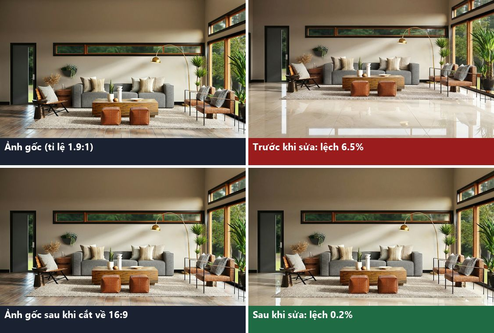
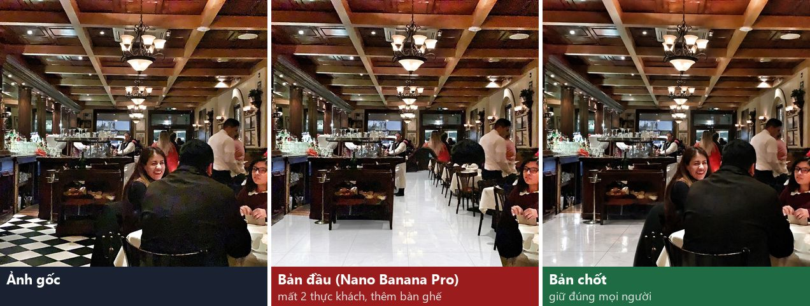
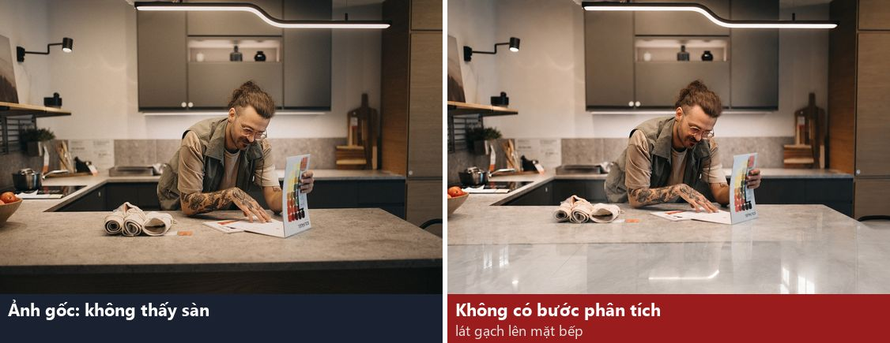
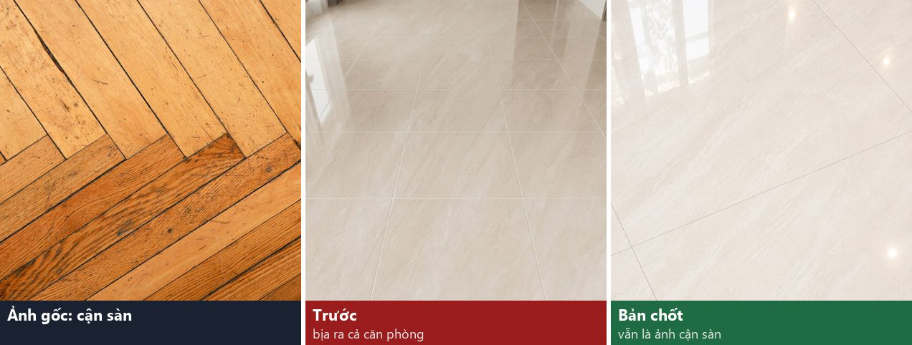
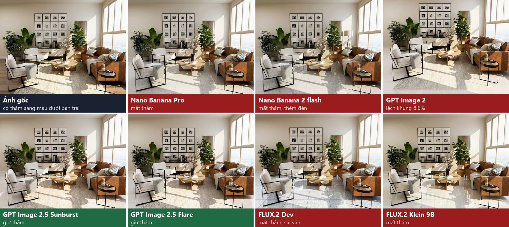
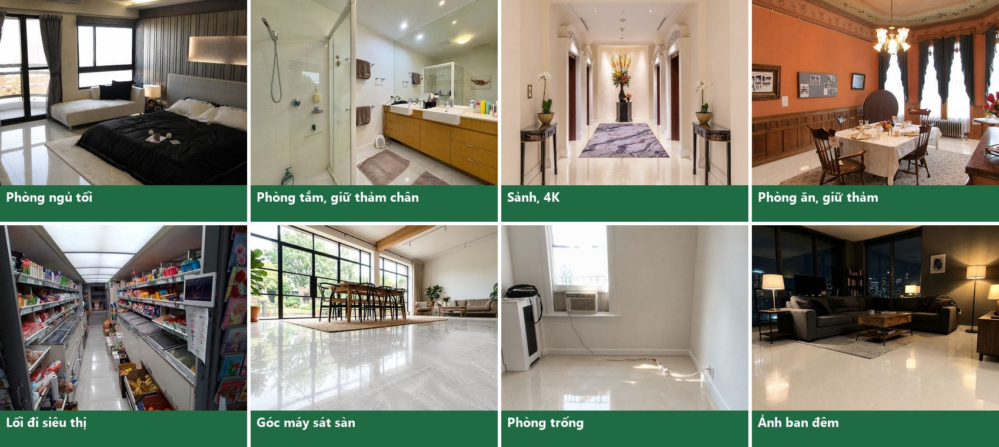
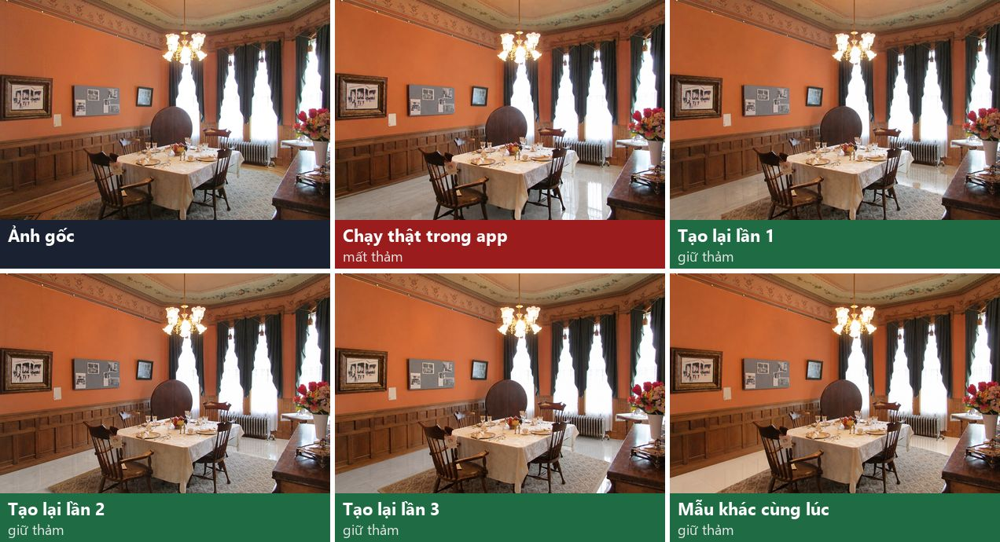

RoomCraft AI · tính năng Chỉnh sửa sàn · 24/10/2026 · PR #25 (chờ duyệt) · ← Thư viện ảnh test
Báo cáo: tích hợp gạch VICOSTONE vào Chỉnh sửa sàn
Khách yêu cầu đưa 8 mẫu gạch VICOSTONE vào tính năng thay vật liệu sàn. Báo cáo này trình bày cách làm, kết quả test, chọn model AI, thời gian và chi phí. Toàn bộ số liệu lấy từ 203 ảnh tạo thật trên RunningHub.
1. Tóm tắt
Kết luận. Khách chọn một trong 8 mẫu gạch thì ảnh mẫu gạch thật được gửi kèm cho AI.
Trước khi lát, một AI khác đọc ảnh để biết phải giữ những tấm thảm, người, đồ vật nào. Ảnh không thấy sàn thì từ chối và không trừ credit.
Model lát gạch là GPT Image 2.5 Sunburst. Model này thắng rõ trong bài so sánh 7 model: giữ thảm, giữ người và giữ khung ảnh tốt nhất.
Gạch ra đúng khổ 120 × 120 cm, bóng kiếng, đúng màu và vân mẫu.
Còn lại. Khoảng 3% số lần vẫn mất thảm. Có tuỳ chọn tự kiểm tra kết quả, mặc định tắt: AI chấm ảnh và tạo lại 1 lần nếu lỗi. Bật thì chậm thêm khoảng 15 s, trung bình tốn thêm khoảng $0.004 mỗi ảnh.
2. Yêu cầu của khách
- 8 mẫu gạch VICOSTONE, khổ 120 × 120 cm, bề mặt bóng kiếng.
- Tên hiển thị: "Gạch VICOSTONE + mã gạch".
- Dùng được ở cả chế độ một vật liệu và so sánh tối đa 4 vật liệu trên cùng ảnh.


3. Cơ chế hoạt động
Mỗi lần khách bấm tạo ảnh với một mẫu gạch VICOSTONE, hệ thống chạy các bước sau.
- Chuẩn bị ảnh (trên máy khách)Xoay đúng chiều, giảm dung lượng, xoá thông tin vị trí. Ảnh được cắt nhẹ mép về đúng tỉ lệ chuẩn gần nhất (16:9, 4:3, 3:2…). Lý do: model tạo ảnh luôn trả ảnh theo đúng tỉ lệ chuẩn. Ảnh gốc lệch tỉ lệ thì kết quả bị dàn lại khung và lệch so với ảnh gốc.
- AI đọc ảnh (Gemini 3.8 Flash)Trả lời 4 câu hỏi về ảnh:• Có thấy mặt sàn trống không?• Có phải ảnh chụp cận sàn không?• Có những tấm thảm, người, thú cưng, đồ vật nào trên sàn phải giữ?• Bề mặt nào dễ bị nhầm là sàn (mặt bếp, bàn, cầu thang)?Không thấy sàn thì từ chối ngay, không trừ credit. Nếu AI đọc quá 45 s thì bỏ qua bước này và dùng prompt chung.
- AI lát gạch (GPT Image 2.5 Sunburst)Model nhận 2 ảnh: ảnh phòng và ảnh mẫu gạch thật của VICOSTONE.Prompt yêu cầu:• Chỉ thay sàn. Giữ nguyên người, đồ vật, thảm và khung ảnh.• Lát lưới gạch 120 × 120 cm, ron mảnh, bóng kiếng phản chiếu.• Có mốc kích thước để AI không vẽ gạch nhỏ, ví dụ "sofa 2,2 m chưa tới 2 viên".Danh sách cụ thể từ bước 2 được ghi thẳng vào prompt, ví dụ "giữ tấm thảm kem dưới bàn trà".
- Tự kiểm tra (tuỳ chọn, mặc định tắt)AI chấm ảnh kết quả so với ảnh gốc và mẫu gạch. Thấy mất thảm, mất người, mất đồ vật hoặc lệch khung thì tạo lại 1 lần và ghi rõ lỗi lần trước. Sau đó giữ lần tốt hơn. Chi tiết ở mục 7.
- Trả kết quảKhách xem ảnh trước và sau, tải về, so sánh nhiều mẫu. Mỗi ảnh trừ 1 credit (2K: 2, 4K: 3), như các vật liệu khác. Nếu AI lỗi thì tự hoàn credit.
4. Vấn đề phát hiện khi test và cách sửa
| Vấn đề | Nguyên nhân | Cách sửa | Sau khi sửa |
|---|---|---|---|
| Gạch vẽ nhỏ, khoảng 60–80 cm thay vì 120 cm | Model Nano Banana flash không hiểu đúng tỉ lệ | Thêm mốc kích thước vào prompt, rồi đổi model | Gạch khổ lớn, đúng 120 cm |
| Kết quả lệch so với ảnh gốc | Model luôn trả đúng tỉ lệ chuẩn và dàn lại khung khi ảnh gốc lệch tỉ lệ | Cắt ảnh về đúng tỉ lệ chuẩn trước khi gửi | lệch 6.5% → 0.1–0.5% |
| Mất thảm, nhất là thảm màu nhạt | AI coi thảm là một phần của sàn | AI đọc ảnh liệt kê từng tấm thảm, kết hợp đổi model | khoảng 50% → khoảng 3% |
| Thay đổi người, thêm bàn ghế | Prompt chưa đủ chặt | Đưa quy tắc giữ nguyên lên đầu prompt, liệt kê người cần giữ | 9/9 ảnh giữ đúng |
| Lát gạch lên mặt bếp, cầu thang khi ảnh không có sàn | Không model nào tự từ chối được | AI đọc ảnh phát hiện "không có sàn" và từ chối trước khi trừ credit | Từ chối sau khoảng 10 s, 0 credit |
| Ảnh chụp cận sàn bị bịa thành cả căn phòng | AI tự đoán bối cảnh | Nhận ra ảnh cận sàn và dùng hướng dẫn riêng | 0/8 bịa phòng |




5. So sánh model AI
10 model trên RunningHub, cùng prompt, cùng 8 ảnh khó:
- thảm sáng màu
- thảm dưới bàn ăn
- nhà hàng có người
- bếp không thấy sàn
- góc máy sát sàn
- phòng ngủ tối
- phòng trống
- ảnh cận sàn
Mỗi ảnh được chấm bằng đo lệch khung, AI chấm điểm và xem bằng mắt. 3 model đứng đầu được chạy thêm với bước AI đọc ảnh trên 10 ảnh.
| Model | Giá/ảnh | Thời gian (trung vị) | Đạt, chưa đọc ảnh (8 ca) | Đạt, có đọc ảnh (10 ca) | Nhận xét |
|---|---|---|---|---|---|
| GPT Image 2.5 Sunburst chọn | $0.05 | 48 s | 6/8 | 10/10 | Giữ thảm, người và khung ảnh tốt nhất. Giá như nhau ở 1K, 2K, 4K |
| GPT Image 2.5 Flare | $0.05 | 49 s | 6/8 | 9/10 | Gần bằng Sunburst. Có lần tự vẽ thêm ghế bar ở ảnh bếp |
| Nano Banana Pro (bản đầu) | $0.06 | 66 s | 3/8 | 5/10 | Hay mất thảm, kể cả khi có danh sách thảm cần giữ |
| Nano Banana 2 flash | $0.027 | 17 s | 4/8 | — | Nhanh, rẻ nhưng vẽ gạch nhỏ, mất thảm, xoá người |
| GPT Image 2 (chất lượng cao) | $0.198 | 87 s | 5/8 | — | Lệch khung tới 14%. Trang giá ghi $0.027 nhưng thực tế tính $0.198 |
| FLUX.2 Klein 9B | $0.01 | 44 s | 1/8 | — | Chỉ nhận 1 ảnh nên không gửi được mẫu gạch. Vân gạch sai |
| FLUX.2 Dev | $0.04 | 135 s | 0/8 | — | Xoá cả giường, bàn ăn. Lớp gạch đè lên người |
| Grok (3 model) | $0.01–0.063 | — | — | — | Không test được. RunningHub trả lỗi "Model response exception" cho mọi yêu cầu, kể cả ảnh mẫu và prompt ngắn, thử lại sau 1,5 giờ vẫn lỗi |
"Đạt" là không có lỗi nặng theo AI chấm và xem bằng mắt. Ca bếp không có sàn thì không model nào làm đúng nếu không có bước đọc ảnh. Có bước đọc ảnh thì ca đó bị từ chối đúng.

6. Kết quả bản chốt
Bản chốt gồm AI đọc ảnh và GPT Image 2.5 Sunburst. Bộ test có 23 ảnh nguồn đủ loại phòng, ở cả 1K, 2K, 4K. 10 ca khó chạy lặp 3 lần để đo độ ổn định. Tổng cộng 50 ảnh tạo ra và 5 lượt bị từ chối vì không thấy sàn.
| Tiêu chí | Kết quả | Ghi chú |
|---|---|---|
| Lỗi nặng (mất thảm, người, đồ vật, lệch khung) | 0/50 | Chạy thật trong app có 1 lần mất thảm trong 4 lần |
| Khớp khung ảnh | lệch trung vị 0.11% | 40/41 ảnh đo được lệch dưới 1.5%. 1 ảnh lệch 1.73%, cảnh vẫn nguyên |
| Giữ thảm | 28/29 (~97%) | Ca lỗi duy nhất được sửa khi bật tự kiểm tra (3/3) |
| Giữ người và thú cưng | 9/9 | Nhà hàng đông người, chó trên sofa, chó nằm ghế lười |
| Ảnh chụp cận sàn | 8/8 không bịa phòng | lưu ý 4/6 lần góc máy hơi nghiêng |
| Từ chối ảnh không có sàn | đúng 2/2 loại | Bếp, cầu thang. Ảnh đen trắng phủ thảm kín sàn cũng bị từ chối (hơi khắt khe) |
| Độ phân giải | 1K · 2K · 4K | Ví dụ: 1536×1024, 2048×1360, 2880×2880 |
| Đúng mẫu gạch | đúng màu, vân, khổ lớn, bóng kiếng | AI chấm có 1 lần lưu ý ron gạch quá mờ |

7. Tự kiểm tra kết quả (tuỳ chọn, mặc định tắt)
Ô "Tự kiểm tra kết quả" chỉ hiện khi khách chọn một mẫu gạch VICOSTONE. Khi bật:
- Ảnh tạo xong, AI Gemini nhận 3 ảnh: ảnh gốc, ảnh kết quả, mẫu gạch. AI chấm theo 8 tiêu chí.
- Hệ thống chỉ quyết định dựa trên 4 tiêu chí đã đối chiếu đáng tin khi test: giữ thảm, giữ người và thú cưng, giữ đồ vật, giữ khung ảnh. Ảnh cận sàn thì bỏ qua tiêu chí khung ảnh. Các tiêu chí còn lại (cỡ gạch, phần không phải sàn) hay báo nhầm nên không dùng để quyết định.
- Có lỗi thì tạo lại 1 lần, prompt ghi rõ lỗi lần trước, ví dụ "lần trước làm mất tấm thảm". Lần 2 cũng được chấm. Hệ thống giữ lần ít lỗi hơn, nếu bằng nhau thì giữ lần sau.
- Dưới ảnh hiện một dòng cho khách biết, ví dụ "✓ Đã tự kiểm tra: không thấy lỗi" hoặc "Đã tự tạo lại 1 lần vì lần đầu: …".
- Không trừ thêm credit. Nếu AI chấm lỗi hoặc quá 45 s thì trả nguyên kết quả lần đầu. Chỉ một lượt kiểm tra chạy cho mỗi ảnh, kể cả khi trang hỏi trạng thái nhiều lần cùng lúc.
| Kiểm chứng | Kết quả |
|---|---|
| Chạy thử trên 50 ảnh kết quả đúng của bản chốt: có bao nhiêu ảnh bị tạo lại oan? | 0/50 |
| Chạy thử trên các lỗi đã biết: mất thảm, mất người ở các model khác và lần mất thảm trong app | bắt được tất cả |
| Lần mất thảm trong app, tạo lại kèm ghi chú lỗi | giữ thảm 3/3 |
| Trong app, tắt (mặc định) | chạy như cũ, khoảng 43 s |
| Trong app, bật, lần đầu đạt | báo "Đã tự kiểm tra", khoảng 67 s |
| Trong app, bật, ép lần đầu lỗi | tự tạo lại, giữ lần 2, xoá ảnh tạm, khoảng 145 s |
| Trong app, so sánh 2 mẫu, ép cả 2 lần lỗi | giữ lần đầu vì ít lỗi hơn |
| Credit | luôn 1 credit/ảnh, tạo lại không tính thêm |

Hai lần "ép lỗi" là test kỹ thuật: tạm cho AI chấm báo lỗi để thử đường tạo lại. Đoạn code đó đã gỡ, không có trong bản giao.
8. Thời gian và chi phí vận hành
| Mỗi ảnh | Thời gian | Chi phí AI |
|---|---|---|
| Bản chốt, tự kiểm tra tắt (mặc định) | ~60 s (12 s + 48 s) | ~$0.051 |
| Bản chốt, tự kiểm tra bật, lần đầu đạt (~97%) | ~75 s | ~$0.053 |
| Bản chốt, tự kiểm tra bật, phải tạo lại (~3%) | ~140 s | ~$0.105 |
| Bản chốt, tự kiểm tra bật, tính trung bình | ~77 s | ~$0.055 |
| Bản đầu (Nano Banana Pro, không đọc ảnh) | ~66 s | $0.06–0.07 |
| Vật liệu sàn thường (gỗ sồi, đá…), không đổi | ~17 s | $0.027 |
- Ước tính theo số lượng: 1.000 ảnh gạch VICOSTONE tốn khoảng $51 khi tắt tự kiểm tra, khoảng $55 khi bật.
- Credit tính cho khách không đổi: 1K = 1, 2K = 2, 4K = 3 credit. Chi phí AI như nhau ở mọi độ phân giải, nên với ảnh 2K và 4K khách trả nhiều credit hơn trong khi chi phí không đổi.
- Thời gian thực tế phụ thuộc hàng đợi RunningHub. Có lần chạy trong app mất 186 s. Bước đọc ảnh có 10% số lần mất 30–45 s.
9. Chi phí test
| Giai đoạn | Số ảnh | Chi phí |
|---|---|---|
| Tích hợp ban đầu, thử kích thước gạch (flash và Pro) | 13 | $0.55 |
| Kiểm tra lệch khung trên 8 tỉ lệ ảnh | 8 | $0.48 |
| Bộ test rộng 23 ảnh (Nano Banana Pro), kèm 2 ảnh tình huống tạo bằng AI | 25 | $1.44 |
| Chạy lại với prompt mới (các ca lỗi ×2 và hồi quy) | 17 | $1.02 |
| So sánh 10 model × 8 ca (Grok lỗi, không tính phí) | 56 | $3.48 |
| 3 model tốt nhất kèm bước đọc ảnh | 30 | $1.60 |
| Độ ổn định bản chốt (23 ảnh và 10 ca khó ×3) | 40 | $2.00 |
| Chạy thật trong app (một mẫu, so sánh, từ chối, tự kiểm tra) | 11 | $0.55 |
| Kiểm chứng tạo lại của tự kiểm tra | 3 | $0.15 |
| AI đọc và chấm ảnh (Gemini, ~209 lượt) | — | ~$0.39 |
| Tổng | 203 | ~$11.7 |
Tính theo bảng giá RunningHub và phí thực tế API trả về cho từng ảnh. GPT Image 2 (chất lượng cao) bị tính $0.198/ảnh theo phí API trả về, không phải $0.027 như trên trang giá. Chưa đối chiếu với hoá đơn tài khoản.
10. Hạn chế còn lại và đề xuất
- Khoảng 3% vẫn mất thảm khi tắt tự kiểm tra. Đề xuất: khách quan trọng hoặc ảnh có thảm thì bật. Muốn chắc hơn có thể bật mặc định, tốn thêm khoảng $0.004 mỗi ảnh và chậm thêm khoảng 15 s.
- Ảnh chụp cận sàn: không còn bịa phòng, nhưng góc máy đôi khi hơi nghiêng so với ảnh gốc.
- Ảnh phủ thảm kín sàn (wall-to-wall) bị từ chối vì AI coi là không có sàn trống. An toàn nhưng hơi khắt khe.
- Model đang dùng kênh giá rẻ (economy) của RunningHub, kém ổn định hơn kênh chính thức. Kênh chính thức chưa có bảng giá công khai để so.
- Grok chưa test được vì RunningHub lỗi. Sẽ thử lại khi dịch vụ chạy.
- RunningHub thỉnh thoảng từ chối ngẫu nhiên với lý do "kiểm duyệt nội dung": 1 lần trong khoảng 200 ảnh. Khi đó app tự hoàn credit.
- Chưa merge: code nằm ở PR #25, chờ duyệt.
11. Phương pháp test
- Ảnh nguồn: 24 ảnh.
- 17 ảnh thật từ Wikimedia Commons, giấy phép CC hoặc phạm vi công cộng, có ghi nguồn trong thư viện ảnh test.
- 5 ảnh Unsplash, trong đó có 1 ảnh cận sàn.
- 2 ảnh tạo bằng AI để thử tình huống: ban đêm, góc máy sát sàn.
- Ba cách chấm cho mỗi ảnh:
- Đo lệch khung bằng máy: so điểm đặc trưng ở phần trên ảnh (tường, cửa, đồ đạc), vì phần sàn đã thay đổi.
- AI chấm điểm: Gemini 3.8 Flash so ảnh gốc, kết quả, mẫu gạch theo 8 tiêu chí.
- Xem bằng mắt từng ảnh. Kết luận cuối dựa trên mắt khi AI chấm và đo máy không khớp.
- Độ ổn định: AI tạo ảnh có tính ngẫu nhiên, nên 10 ca khó chạy 3 lần. Bản chốt được chạy thật trong app: một mẫu, so sánh 2 mẫu, ảnh không có sàn, tự kiểm tra bật và tắt.
- Ảnh và kết quả từng ca: xem trong so sánh 7 model, bản chốt và tự kiểm tra.